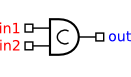
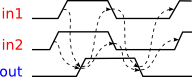
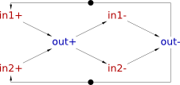
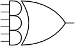
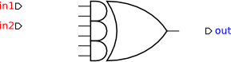
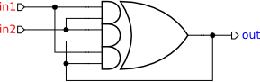
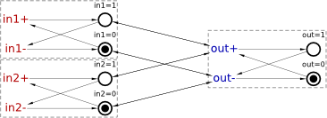
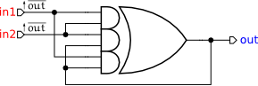
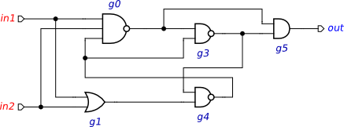
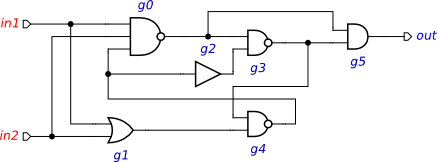

Table of Contents
Synthesis and verification of C-element
C-element is a latch that synchronises the phases of its inputs. A symbol for a 2-input C-element and its timing diagram are shown in the figures below. Initially all the signals are in the low state. When both inputs in1 and in2 go high, the output out also switches to logical 1. It stays in this state until both inputs go low, at which stage the output switches to logical 0.
|  |
| Symbol |
|  |
| Timing diagram |
Modelling
Let us model the C-element behaviour using the STG formalism. Create a new STG work called stg-celement and translate the sequence of events in the timing diagram into a sequence of STG transitions. Basically you need to create a signal transition for each event of the timing diagram and capture the causality between these events by means of directed arcs between signal transitions. Recreate the following STG model in Workcraft.
![[T] Signal Transition](../../help/editor_tools-signal_transition.png "[T] Signal Transition") . Pay attention to the hint at the bottom of the screen: Click to create a falling (or rising with Ctrl) transition of an output (or input with Shift) signal.
. Pay attention to the hint at the bottom of the screen: Click to create a falling (or rising with Ctrl) transition of an output (or input with Shift) signal.

The resulting STG should look as follows.

Validation and verification of specification
Activate the simulation tool ![[M] Simulate](../../help/editor_tools-simulate.png "[M] Simulate") and exercise the obtained STG model. Click one of the enabled signal transitions (they are highlighted in orange) to evaluate the STG into the next state. Note that the sequence of fired transitions is recorded in the simulation trace that is somewhat similar to the original timing diagram. Check that the simulation traces correspond to the intended behaviour of C-element.
and exercise the obtained STG model. Click one of the enabled signal transitions (they are highlighted in orange) to evaluate the STG into the next state. Note that the sequence of fired transitions is recorded in the simulation trace that is somewhat similar to the original timing diagram. Check that the simulation traces correspond to the intended behaviour of C-element.
Before proceeding to the synthesis of the C-element it is a good idea to verify that its specification meets essential requirements, e.g. that it is consistent, free from deadlocks, and output-persistent.
To verify the signal consistency (i.e. that the rising and falling phases of each signal alternate in all possible execution traces) select Verification→Consistency [MPSat] menu item. Similarly, for deadlock checking select Verification→Deadlock [MPSat], and for output-persistency select Verification→Output persistence (without dummies) [MPSat] menu item.
If the specification violates any of these properties then a trace leading to the problematic state will be reported. This trace can be simulated for better understanding the reported issues and for correcting them in the specification.
Synthesis
The STG specification can now be synthesised into an asynchronous circuit implementation either with MPSat or Petrify back-end tools via Synthesis menu.
A complex-gate implementation obtained with Petrify (Synthesis→Complex gate [Petrify] menu item) appears in the Output panel towards the end and is as follows: (Note that solution is not unique and you may get a slightly different equation.)
[out] = in2 (in1 + out) + in1 out;
By opening the parenthesis one can re-write it as
[out] = in1 in2 + in2 out + in1 out;
This equation can be directly mapped into an AND-OR complex gate whose function is Z = A*B + C*D + E*F ; let us call it AO222 gate.
Circuit designers use hardware description languages, such as Verilog or VHDL, to precisely describe the circuit. For example, the association of the C-element ports to the AO222 gate pins can be described by the following Verilog module (if you are not familiar with Verilog you can safely skip this part as it is not required by the rest of the tutorial):
module celement (in1, in2, out); input in1; input in2; output out; AO222 inst_c (.A(in1), .B(in2), .C(in2), .D(out), .E(in1), .F(out), .Z(out)); endmodule
Circuit capturing
Workcraft can automatically derive a circuit from the synthesis output of MPSat or Petrify. (This is controlled by the Import synthesis result checkbox the Edit→Preferences… window under the Models→Digital Circuit leaf, and is enabled by default.) However, for the purpose of this exercise you should capture the circuit schematics manually.
Create a new Digital Circuit work called circuit-celement-cg and capture the implementation suggested by Petrify in form of a gate-level netlist.
- Activate functional generator
![[F] Function](../../help/editor_tools-function.png "[F] Function") and click in the desired position of the AND-OR complex gate.
and click in the desired position of the AND-OR complex gate.
- Activate selection tool
![[S] Select](../../help/editor_tools-select.png "[S] Select") .
.
- Select the only pin of the newly created function component.
- In the Property editor change the Name of the pin to
Zand modify its Set function toA*B+C*D+E*F.

- Activate port generator
![[P] Input/output port](../../help/editor_tools-port.png "[P] Input/output port") . Pay attention to the hint at the bottom of the screen: Click to create an output port (hold Shift for input port).
. Pay attention to the hint at the bottom of the screen: Click to create an output port (hold Shift for input port).
- Click in intended location of the output port. Note that by default the port will be named
out1- you can change this name tooutlater. - Hold Shift and click in the desired locations of the input ports – they will be automatically assigned the names
in0andin1. - Switch to the selection tool. Choose the output port, go to the property editor and change port Name to
out. Similarly change the name of input portin0toin2.

- Activate connection tool
![[C] Connect](../../help/editor_tools-connect.png "[C] Connect") .
.
- Connect input ports
in1to the 1st and 5th pins of the complex gate (AandErespectively). - Connect input ports
in2to the 2nd and 3rd pins of the complex gate (BandCrespectively). - Connect the output pin of the gate to the output port
outand to the 4th and 6th inputs of the gate (DandFrespectively).

Optional simplification
You may wish to tidy up the circuit schematic and make it more readable by adding wire forks. If you create a connection to/from a wire then a joint will be automatically inserted. This result should look as follows; this implementation can be downloaded here: circuit-celement-cg.work (3.09 KiB, 7M ago).

Verification of implementation
Activate the simulation tool and simulate the captured complex gate implementation of the C-element. Ports, pins and wires are colour-coded: blue means low level and red means high level of the signal. Excited pins and ports are highlighted in orange.
Click one of the excited pins to toggle its logical value. Similar to the STG simulation, the sequence of signal events is recorded in the simulation trace and can be subsequently replayed for analysing the circuit's behaviour.
To conduct formal verification the circuit has to be converted into an STG. Normally this is done silently by the tool, but it is possible to view the intermediate circuit-STG via Conversion→Signal Transition Graph. The resulting STG for this circuit is shown below. Note that your layout may be slightly different and that this STG will not be required in the rest of the tutorial.

Note that if the C-element's inputs are not restricted in any way then they can change in an unexpected manner and cause malfunction of the circuit. This can be confirmed by checking the circuit for hazards Verification→Hazards [MPSat] – the circuit has a hazard after the following trace: in2+, in1+.
Play this trace to discover that indeed, at the end of it the output of the C-element is excited and ready to switch to logical 1, but an unexpected in1- or in2- transition would disable it, that does not fit the original STG specification.
The STG specification contains some information that is not available in the circuit, namely the behaviour of the environment. The circuit can work correctly only in an environment that respects its contract specified by the original STG. In other environments the circuit may exhibit hazards, deadlocks, etc. Therefore, during formal verification of the circuit one has to restrict its environment in such a way that the circuit only receives those inputs that are allowed by the STG specification.
This can be achieved as follows:
- In the circuit editor make sure that no components are selected (click on the editor canvas).
- In the property editor choose the Environment URI property and select the work file with the original STG specification.
For example, you can feed the inverted value of C-element output to its inputs.
- Activate the selection tool.
- Select both input ports
in1andin2(hold Shift and click each of them). - In the property editor assign the same Set function
!outto both inputs (!means inversion – see Boolean expressions for details).

Repeat the verification procedure to check that assuming a well behaved environment the circuit is free from hazards, deadlock-free and conforms to the environment specification. All these verification steps can be performed simultaneously via Verification→Conformation, deadlock and hazard (reuse unfolding) [MPSat].
Decomposed implementation
Large gates like AO222 may not be available in the technology library and thus other implementations of C-element using smaller gates are of interest. However, it is very easy to make a mistake when designing asynchronous circuits, and so any such implementation has to be formally verified against the original STG specification.
Download the following C-element implementation due to Mayevsky circuit-celement-decomposed.work (3.78 KiB, 7M ago) and verify that it conforms to the STG specification and is free from deadlocks and hazards.

Note that the correctness of this implementation depends on the isochronic forks assumption: the difference in arrival times of a signal to the ends of a wire fork is negligible compared to any gate delay. If this assumption is violated, the above implementation can exhibit hazards. Download the following C-element implementation circuit-celement-decomposed-hazard.work (3.9 KiB, 7M ago) where a delay in a wire fork is made explicit (modelled by a buffer). Formally verify this model, inspect the violation trace, and explain what can go wrong in it.

Solutions
Download all the Workcraft models discussed in this tutorial here:
C-element models (17.17 KiB, 6M ago)